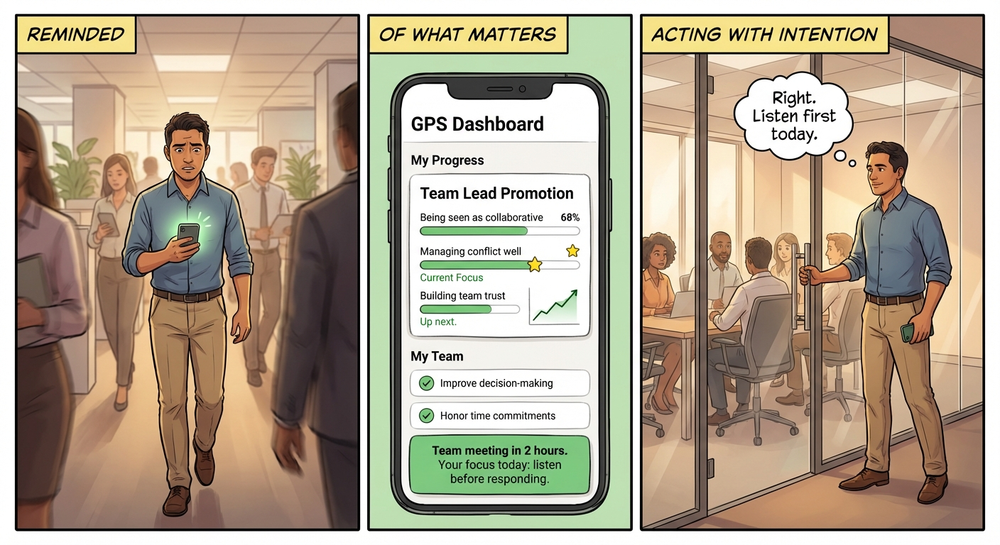

Stoic — January 2026
Coaching doesn't scale. Behavior change apps don't work. We're building the bridge.
Powerful but expensive. One coach, one person, no scale.
They track habits. They count streaks. They don't help you actually change.
A system that remembers your journey, adapts when you struggle, and connects daily actions to who you want to become.
An AI coach with memory that owns the entire behavior change cycle.

The experience: reminded of what matters, sees progress, acts with intention
Not a chatbot. A system that knows where you started, what you're working on, where you've struggled, and what's next — and uses all of that to guide you.
The AI Coach with memory is the core engine. Once it works, it powers two design spaces.
Multi-session coaching that remembers your journey and adapts over time
Individual behavior change at scale. The product we're building now.
Team-level coaching that works because individuals are actually growing.
We're not choosing between these markets — we're building the foundation that makes both possible.
Three things that validate the bet.